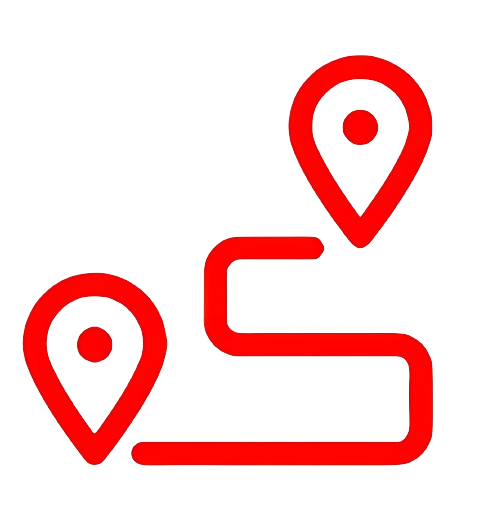

<nav class="bg-white border-gray-200 dark:bg-gray-900 py-5">
  <div class="max-w-screen-xl flex flex-wrap items-center justify-between mx-auto p-2">
    <a routerLink="/home" class="flex items-center space-x-3 rtl:space-x-reverse">
      
      <span class="text-gray-800 self-center text-2xl font-semibold whitespace-nowrap dark:text-white">Mobibus</span>
    </a>
    <div class="flex md:order-2 space-x-3 mt-1 md:space-x-0 rtl:space-x-reverse">
      @if(strUserName){
        <span class="navbar-text m-3">
          <a class= "text-gray-900  text-md font-medium text-primary-600 hover:underline" 
          (click)="doSessionUserView($event)" href="#">{{ strUserName }}</a>
        </span>
        <button type="button" class="text-white bg-red-600 hover:bg-red-700 focus:outline-none focus:ring-4 focus:ring-red-300 font-medium rounded-full text-sm px-5 py-2.5 text-center me-2 mb-2"(click)="redirectToLogout()"><i class="fa-solid fa-power-off"></i></button>
      }@else{
        <span class="navbar-text m-3 text-gray-900 ">
          No hi ha sessió
        </span>
        <button class="text-white bg-red-600 hover:bg-red-700 focus:outline-none focus:ring-4 focus:ring-red-300 font-medium rounded-full text-sm px-5 py-2.5 text-center me-2 mb-2" (click)="redirectToLogin()">
          <i class="fa-solid fa-right-to-bracket"></i>
        </button>

      }
      <button data-collapse-toggle="navbar-cta" type="button"
        class="inline-flex items-center p-2 w-10 h-10 justify-center text-sm text-gray-500 rounded-lg md:hidden hover:bg-gray-100 focus:outline-none focus:ring-2 focus:ring-gray-200 "
        aria-controls="navbar-cta" aria-expanded="false">
        <span class="sr-only">Obre el menú principal</span>
        <svg class="w-5 h-5" aria-hidden="true" xmlns="http://www.w3.org/2000/svg" fill="none" viewBox="0 0 17 14">
          <path stroke="currentColor" stroke-linecap="round" stroke-linejoin="round" stroke-width="2"
            d="M1 1h15M1 7h15M1 13h15" />
        </svg>
      </button>
    </div>
    <div class="items-center justify-between w-full md:flex md:w-auto md:order-1" id="navbar-cta">
      <ul
        class="flex flex-col font-medium p-4 md:p-0 mt-4 border border-gray-100 rounded-lg bg-gray-50 md:space-x-8 rtl:space-x-reverse md:flex-row md:mt-0 md:border-0 md:bg-white">
        
        <li>
          <button routerLink="/home" [routerLinkActive]="['is-active']" class="   focus:outline-none  font-medium rounded-lg text-sm px-5 py-2.5 me-2 mb-2">Inici</button>
        </li>
        <li>
          <button routerLink="user/linea/plist" [routerLinkActive]="['is-active']"class="   focus:outline-none  font-medium rounded-lg text-sm px-5 py-2.5 me-2 mb-2">Línies</button>
        </li>
        <li>
          <button routerLink="user/parada/plist"[routerLinkActive]="['is-active']" class="   focus:outline-none font-medium rounded-lg text-sm px-5 py-2.5 me-2 mb-2">Parades d'autobús</button>
        </li>
        
        @if(oSessionUser?.role == false) {
          <li>
            <button routerLink="/admin/user/plist" [routerLinkActive]="['is-active']"class="   focus:outline-none font-medium rounded-lg text-sm px-5 py-2.5 me-2 mb-2" >Admin Usuari</button>
          </li>
          <li>
            <button routerLink="/admin/paradaFav/plist" [routerLinkActive]="['is-active']" class=" focus:outline-none  font-medium rounded-lg text-sm px-5 py-2.5 me-2 mb-2" >Admin Parades favorites</button>
          </li>
        }
    </ul>
  </div>
  </div>
</nav>

